Brand Growth
Vaseline · Rexona · AXEWhat is everyone else saying?
Taiwan’s deodorant shelf is crowded and led by Nivea. Before choosing a claim for Vaseline, Rexona and AXE, I audited what competitors claim in store and studied how Rexona launched in other Asian markets.
Share of products by main claim · my shelf audit at Watsons, POYA and Cosmed
Also: only 9% claimed 0% aluminum and 8% mentioned sensitive skin. Most brands sell the same “dry and fresh” promise.
- Shelf claim audit107 products in 3 drugstore chains: claims, scent, format, price
- Men’s body-spray reviewNivea Men, Adidas, Gatsby and Malizia: claims and ad style
- Rexona launch benchmarkHow the range launched in the Philippines, Malaysia and Thailand
- Skin-care claim audit20 ranges from L’Oréal, Olay and Dr.Wu: concern, ingredient, price
Brightening, skin care and scent-led stories had room to stand out.
Why each brand got its claim
Three brands, three different jobs: what the Taiwan market told us, and the one claim each brand led with.
Vaseline
Job: win mass shoppers with a new variant
- Taiwan’s skin-care leaders sell one concern plus a hero ingredient, e.g. Olay’s “beats dullness and roughness”.
- Rough, dull underarms are an everyday worry, so the claim speaks to most shoppers, not a niche.
- On the deodorant shelf, only 6% of 107 products made a skin-care claim.
Rexona
Job: rebrand the range beyond sweat protection
- Whitening was Taiwan’s top skin concern in summer 2024, and vitamin C its most popular ingredient.
- Scent is a fast-growing social topic in Taiwan, well beyond perfume itself.
- In the Philippines, Malaysia and Thailand, the range launched as skin care plus perfume-like scent.
AXE
Job: launch a men’s line led by fragrance
- Men’s rivals sell function: Nivea Men and Gatsby lead with cooling, Adidas with long-lasting dry.
- Only Malizia leads with scent; confidence and status are barely used, an open space for AXE.
- Rival ads share three look-alike styles (icy blue, sporty black, black and gold), so AXE needed its own story.
Every asset repeats one claim
The same three claims, carried onto key visuals, on-pack claim stickers and hotspots. Click any image to enlarge it.
Vaseline
Smoother, brighter underarms in 3 days
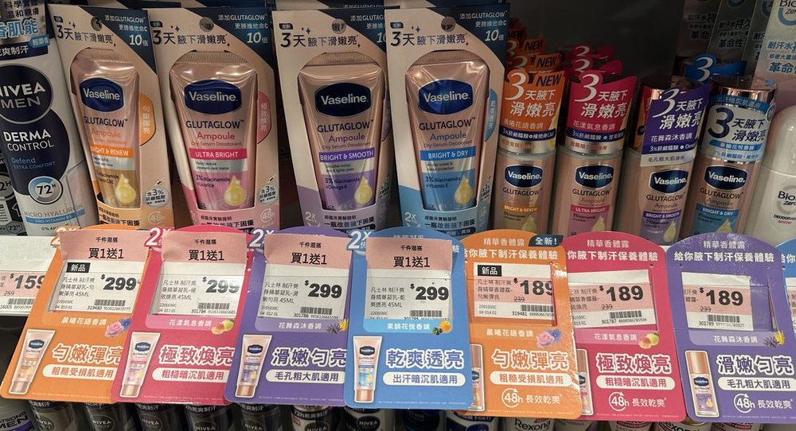
Rexona
Brightening + counter-grade scent
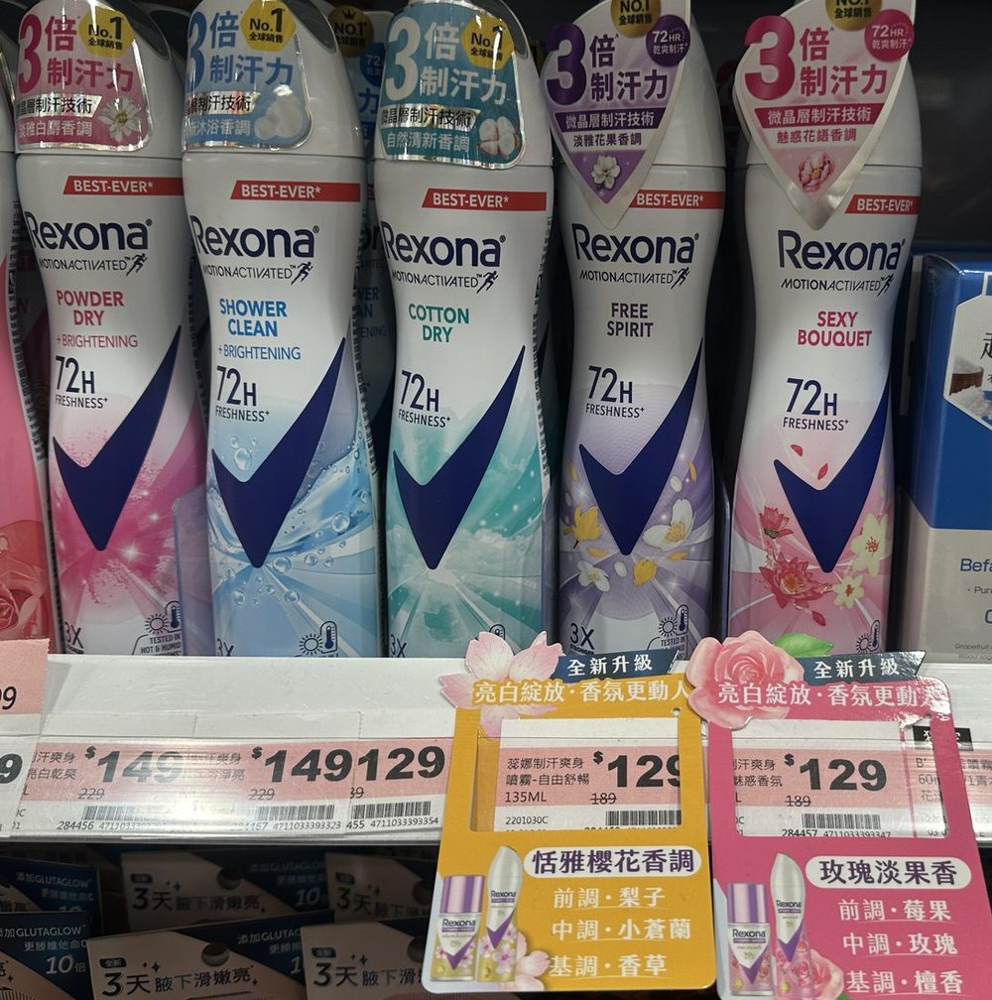
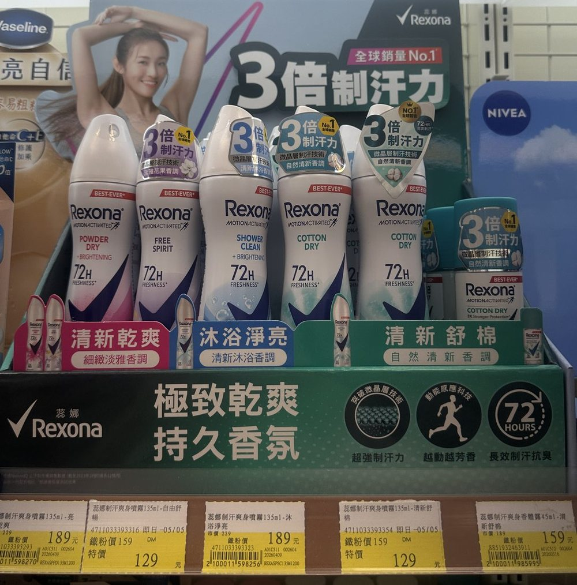
AXE
Premium fragrance that sets your level
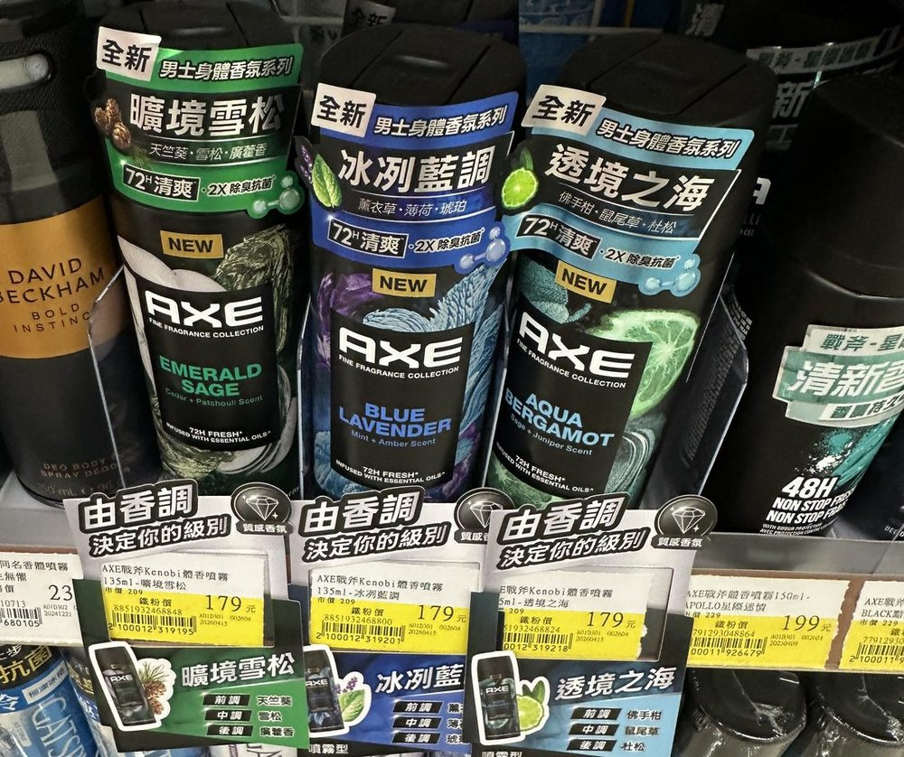
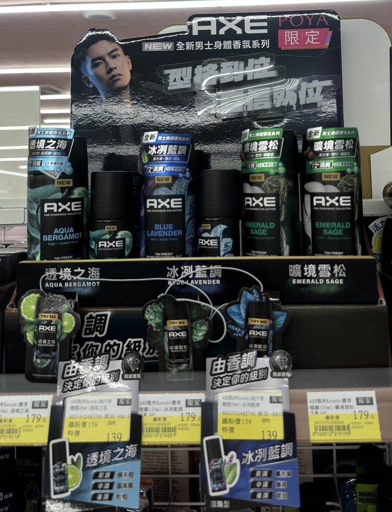
Value share up, shelf space next
YoY value-share change in personal-care stores.
I counted every deodorant on shelf in three chains to compare shelf space with sales momentum.
- Shelf audit
- Gap found
- Retailer proposal
Vaseline’s shelf space trailed its fast sales growth, so the audit became a data-backed case for more facings.
Sam’s Club China
Amora · launched on timeWin on a short ingredient list
Sam’s Club China, a members-only warehouse chain, ordered 2-packs of two French condiments; Amora reduced salt & sugar ketchup is shown here. I benchmarked rivals, chose the claims, and steered pack and app content to buyer approval.
| Amora reduced salt & sugar | Heinz reduced salt, 0% sugar | MasterFoods reduced salt & sugar | |
|---|---|---|---|
| Ingredients | Only 5, clean label | 8, incl. stevia | 7, incl. acidity regulator |
| Tomato story | 890 g tomatoes per bottle (+25%) | Water + tomato paste base | Australian sun-ripened |
| Taste test | Pure tomato; not too sweet or salty | More sour; sweetener aftertaste | Sweeter; kids prefer it |
| Pack | Upside-down squeeze, green cap | Upside-down squeeze | Twist cap |
| Shelf life | 16 months | 12 months | 12 months |
Source: my competitor benchmark (Nov 2025), including a side-by-side taste test.
France’s everyday sauce brand since 1919: natural, simple, family-friendly
- Only 5 simple ingredientsHeinz lists 8 (incl. stevia), MasterFoods 7 (incl. an acidity regulator). Ours has no artificial additives.
- More tomato, pure taste+25% tomato, 190 g per 100 g. In our taste test, rivals came out more sour or sweeter.
- Peace of mind for the familyAll three cut salt or sugar, so that alone is no edge. We framed it as “全家吃得放心”.
Natural tomato taste, family feel
Each claim became a design choice. I wrote the brief and merged brand, buyer and compliance feedback each round.
- Nov · Benchmark + brief
- Nov–Jan · Front of pack
- Feb · Back + compliance
- Mar–Apr · App page
- Launch
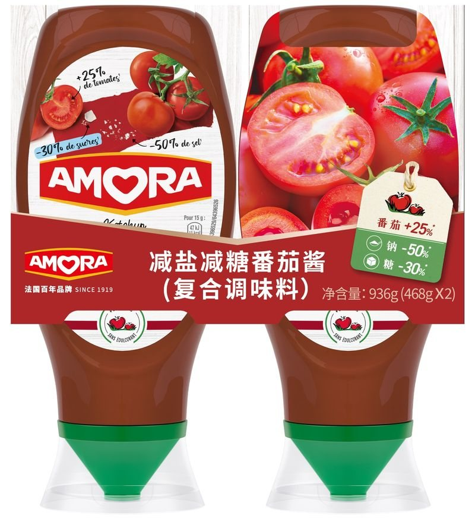
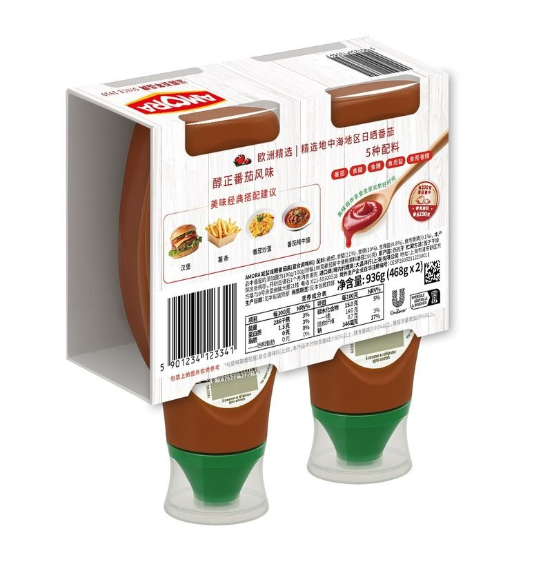
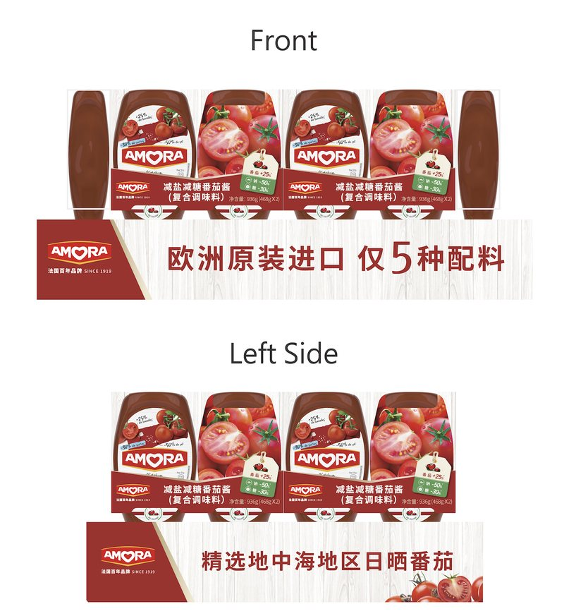
- 5 natural ingredients, natural flavor“Only 5 ingredients” leads the tray band, and the back lists all five.
- A natural tomato lookFresh whole and halved tomatoes fill the front; the green cap signals freshness.
- A family brand, an approachable feelLike Amora’s family-centred story: kitchen-wood background, everyday dishes and “good times with the whole family” on the back.
Persuasive, and compliant
The Sam’s Club app page tells the product story in a scroll; every claim on it had to be supportable.
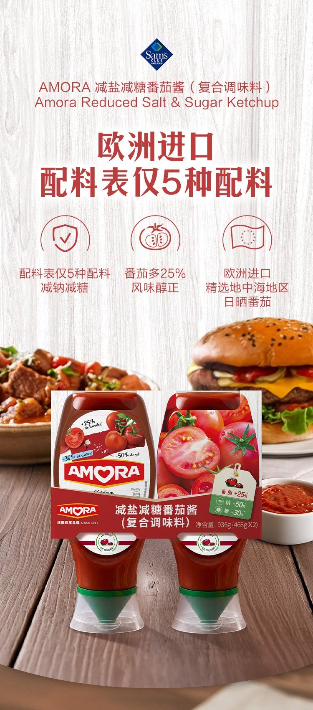
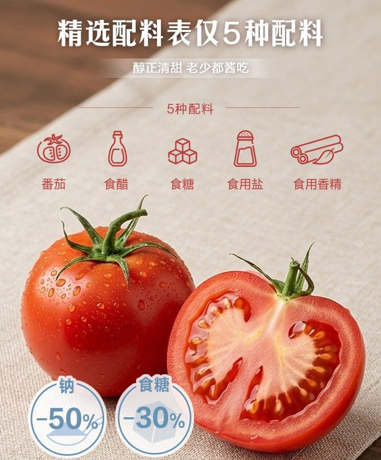
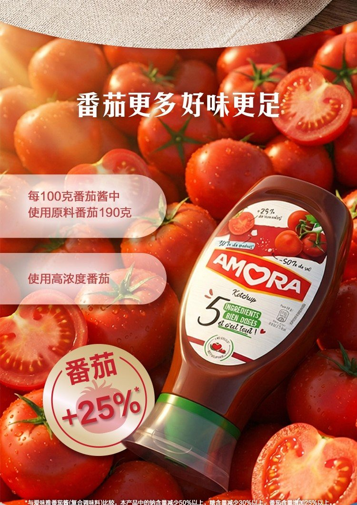
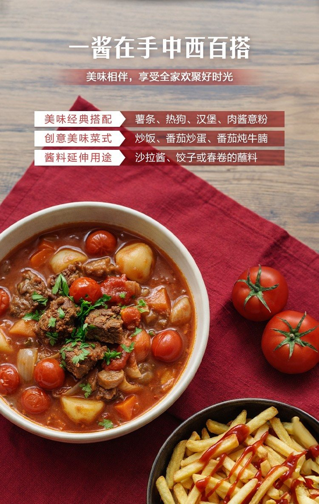
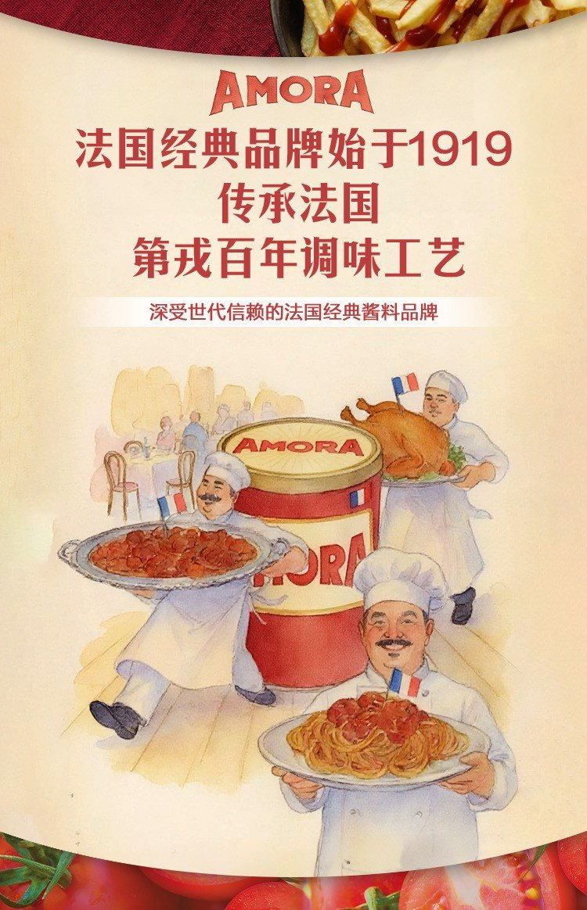
“No burden” (无负担)
→ Pure, clean taste; eat with peace of mind“Leading brand” (领导品牌)
→ A French sauce brand trusted for generations“+25% tomato”
→ Kept, with a disclaimerMy role: briefed the agency on a 9-section page, merged buyer, brand and compliance feedback, and kept the launch on schedule.
PIF Tracker
Excel VBA · Operations · NPD · ComplianceFrom chasing updates to one live summary
Taiwan’s cosmetics law is phasing in a Product Information File (PIF) for every product. Each file needs 20+ documents from several teams, and progress was tracked by hand. I built an Excel VBA tracker that rolls SKU updates up to each file.
- Many teamsDocuments come from several teams and outside consultants, each with its own lead time.
- Many-to-oneOne file covers several SKUs, each at a different stage.
- Parallel workSome steps run at the same time; later steps wait for all of them.
Align
Agreed each step’s order and lead time with the Operations and NPD teams.
Source
A back-end sheet on their BWB&PC master file tracks each SKU’s status and finish date.
Summary
An automated dashboard rolls the SKUs up to each file: delay, current step, risk color.
Agree on step order and lead time
With the Operations and NPD teams: which steps run in order, which run in parallel, and how long each one takes.
E waits for all of B, C and D. Steps are anonymized (A–E) and lead times are illustrative.
So each SKU is forecast by its slowest path, and each file by its latest SKU.
Agreed with Operations · NPD
One row per SKU
A back-end sheet built on the teams’ BWB&PC master file; owners mark a step “Completed” and VBA stamps the date.
- BWB&PC master file
- Source: one row per SKU
- Owner types “Completed”
- VBA stamps date + forecast
| SKU | PIF | A | B | C | D | E | Est. finish |
|---|---|---|---|---|---|---|---|
| SKU-A1 | PIF-A | Completed03-30 | Completed04-06 | Completed04-15 | Completed04-18 | Completed04-22 | Apr 22 |
| SKU-A2 | PIF-A | Completed03-30 | Completed04-08 | Completed04-17 | WIP | Pending | Apr 25 |
| SKU-A3 | PIF-A | Completed03-30 | Completed04-09 | WIP | Pending | Pending | May 06 |
| SKU-B1 | PIF-B | Completed04-01 | Completed04-10 | Completed04-20 | Completed04-24 | WIP | Apr 28 |
| SKU-B2 | PIF-B | Completed04-01 | Completed04-12 | Completed04-21 | WIP | Pending | May 01 |
Made-up rows in the real sheet’s layout; no real SKU codes or dates.
The file takes its latest SKU date, then feeds the Summary.
One automated row per PIF
The dashboard rolls the SKUs up to each file and colors the delay, so the team knows which file to chase first.
| File | Deadline | Progress | Now at | Done | A | B | C | D | E |
|---|---|---|---|---|---|---|---|---|---|
| PIF-A | May 30 | Delay · 10 days late | Step D | 86% | Done | Done | Done | 14/16 | 0/3 |
| PIF-B | Jun 20 | On time · 13 days early | Step E | 95% | Done | Done | Done | Done | 2/3 |
| PIF-C | Jun 01 | Delay · 18 days late | Step B | 36% | Done | 1/2 | 0/3 | 0/16 | 0/3 |
| PIF-D | Jun 15 | Delay · 4 days late | Step C | 62% | Done | Done | 1/3 | 13/16 | 0/3 |
| PIF-E | May 18 | On time · 6 days early | Completed | 100% | Done | Done | Done | Done | Done |
| PIF-F · paused | — | No deadline | Step B | 20% | Done | 0/2 | 0/3 | 0/16 | 0/3 |
Made-up rows in the real Summary sheet’s layout; steps anonymized (A–E). Try the filter above.
What I brought
My role: turn research into brand messages, carry two launches through approvals, and build the tool that tracks product files.
Learn how the work really happens, then make it simple for everyone who touches it.